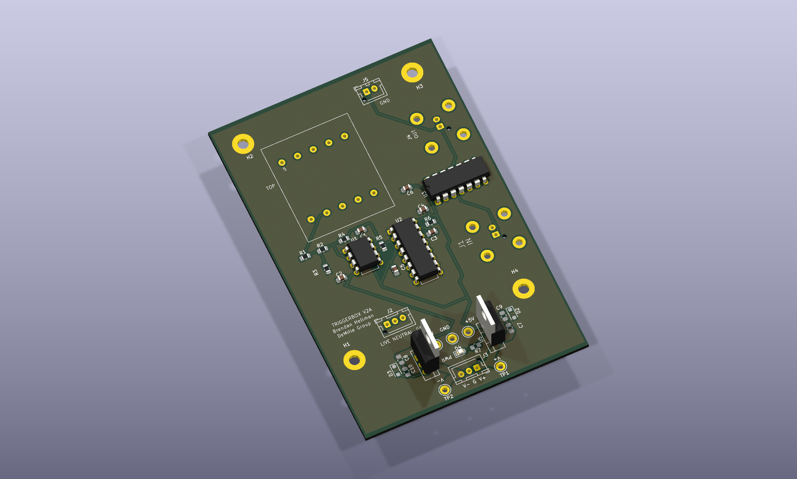
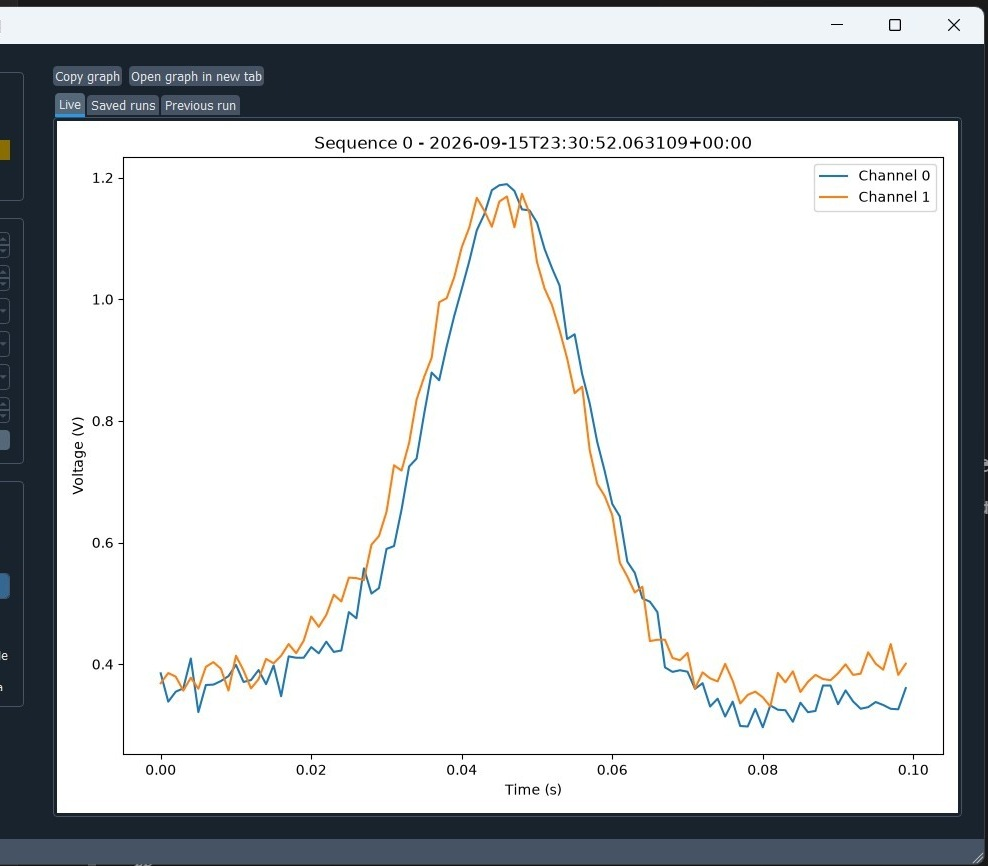
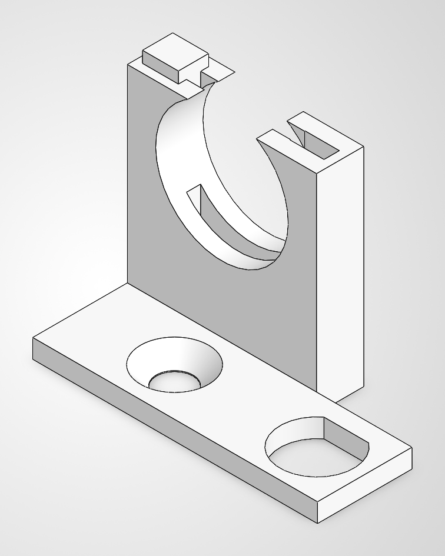
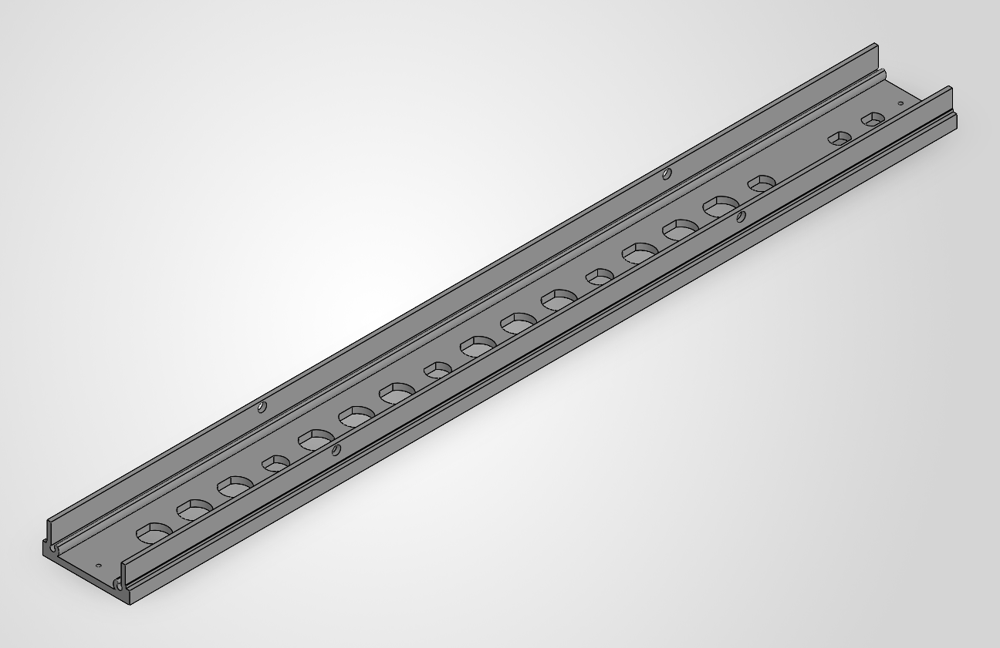
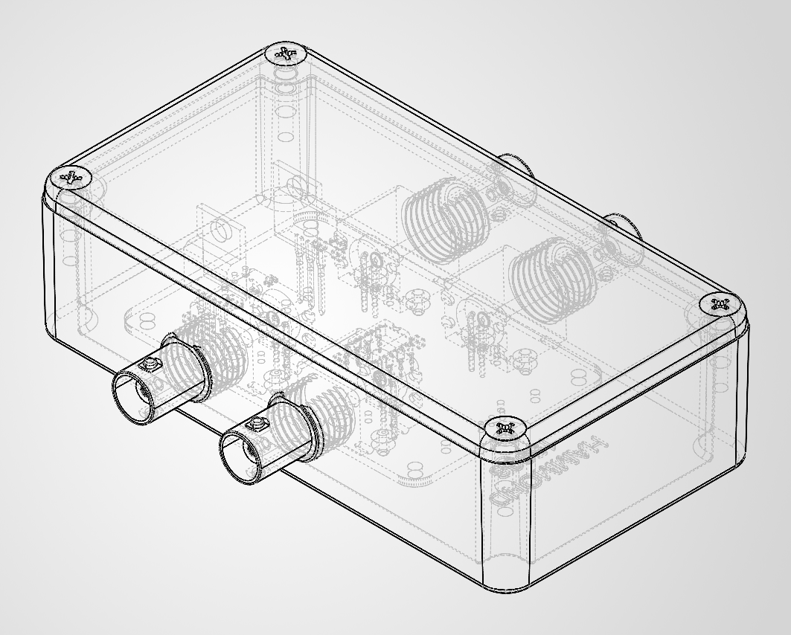
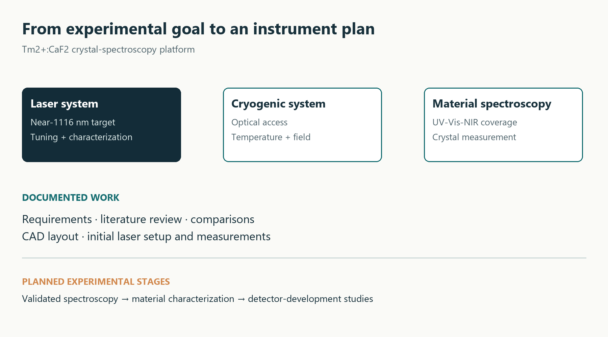

PHYSICS & MATHEMATICS · HANDS-ON RESEARCH
Brendan P.
Hellman.
I design and build the tools
that make experiments work.
Custom hardware, scientific software, and optical systems. My work connects a design on screen with the practical details of the laboratory bench.
DeMille Lab · Johns Hopkins University · Baltimore, Maryland

Build. Measure.FROM A REQUIREMENT TO AN INSTRUMENT
SELECTED WORK
Three ways into the work.
A hardware build, a scientific application, and an optical system with recorded bench measurements.

PCB DESIGN03 / ELECTRONICS
60 Hz trigger box
Circuit, rack enclosure, connector layout, and a documented assembly workflow.

APPLICATION CAPTURE · SYNTHETIC DATA09 / SOFTWARE
Analog-input acquisition
Threaded acquisition, external triggering, trace storage, and saved-run review.
 LAB NOTEBOOK PHOTOGRAPH
LAB NOTEBOOK PHOTOGRAPH16 / OPTICS
Laser setup & measurement
Collimation CAD, bench integration, and a recorded current-modulation calibration.
ABOUT ME
Curiosity, with
something to show for it.
My background is in physics and mathematics at Johns Hopkins University. I like work that moves between understanding a scientific problem and making the equipment or software needed to study it.
My research work in the DeMille Lab spans mechanical fixtures, circuit and enclosure design, experiment-control software, optical layouts, and data analysis. I’ve worked from CAD and fabrication files through assembly, wiring, integration, and recorded bench measurements.
I care about the details that make a project useful to the next person: clear interfaces, practical assembly instructions, readable code, and records that distinguish a completed build from a design or a plan.
PROJECT LIBRARY
Explore all 19 projects.
From custom lab hardware to extensible software. Each case study explains the work and the recorded outcome.
19 of 19 projects
Source-region mounting systems
A modular support structure for the lab’s source-region oven, with a smaller prototype assembly and a larger frame design. The work connects equipment layout, custom flange supports, standard extrusion hardware, and a practical assembly sequence.

Alpha-detector stand
A breadboard-mounted fixture that holds an alpha detector and positions a filter-paper sample. Custom split clamps connect the detector to standard optical posts while a separate sheet-metal stand locates the sample.
60 Hz trigger box
A laboratory interface that turns a 60 Hz reference and an enable input into active-low trigger pulses. The project spans the circuit, PCB revisions, rack enclosure, connector layout, wiring, and fabrication documentation.

Optical shutter mounts
A compact, printable mount that holds a camera shutter on an optical post and provides space for a BNC connector. Multiple saved versions show the progression toward the final mount geometry.

Shutter timing characterization
An oscilloscope-to-Python workflow for comparing the shutter command with an optical signal. The notebook reads opening and closing traces, plots the two channels, and records the shutter’s response timing.

Coaxial-relay rack enclosure
A custom front-panel and mounting design for an electromechanical coaxial-relay box. The file set carries the enclosure from a SolidWorks part to shop drawings and waterjet-ready geometry.

Dual-buffer enclosure integration
Mechanical packaging for a laboratory dual bipolar buffer board. The enclosure assembly brings the existing PCB and connectors into a compact Hammond-style instrument box.

PVD chamber print mockup
A physical-scale mockup workflow for a PVD chamber assembly. The source set contains the complete CAD, a part representation, and separate left- and right-side STEP exports for downstream fabrication or printing.
Analog-input acquisition GUI
A PyQt5 application for externally triggered MCC analog acquisition, with a standalone manual workflow and TCP integration with the experiment-control software. The interface follows a trace from arming through storage, live display, and later review.

Universal scientific-camera GUI
A camera-agnostic imaging application that shares experiment sequencing, display, saving, and analysis across multiple camera backends. Camera-specific SDK behavior is isolated behind a common plugin interface.

Lab-control integration and documentation
Work within an existing laboratory-control codebase to connect sequence orchestration, camera acquisition, analog acquisition, and hardware timing. The archive includes the inherited controller, integration modules, and substantial system documentation.

Extensible experiment-control prototype
A newer control-system foundation that discovers devices from manifests and runs validated action configurations through a GUI-independent orchestrator. The included signal generator is a simulator used to develop the extension pattern.

NI-DAQmx hardware test utility
A parameterized Python utility for exercising National Instruments analog and digital channels. Device names, channel names, PFI trigger lines, sample rate, and acquisition duration are grouped as settings.

MOT-loading models and fitting
Python translations of a Mathematica MOT-loading model, combining differential-equation solving with weighted nonlinear fitting. Saved notebooks preserve model overlays and residual plots for both algebraic and coupled-ODE approaches.

Cryostat absorption-spectroscopy layout
An optical-breadboard layout for near-1115 nm absorption spectroscopy through a cryostat. The assembly integrates fiber-launch and receive packages, lenses, adjustable mounts, posts, and the cryostat’s mechanical envelope.
Laser collimation and characterization
Laser-assembly and measurement work for the crystal-spectroscopy platform. CAD files capture a beam-collimation assembly, while lab notes and a bench photograph document laser setup and current-modulation characterization.

Laser feedforward circuit
A feedforward circuit project connecting piezo-voltage changes to the laser-current modulation input. The saved schematic and notebook calculations address adjustable gain, polarity, buffering, and calibration of the required transfer function.

Laser-diode protection PCB
A compact surface-mount implementation of a published laser-diode protection circuit. The KiCad project preserves the source reference and makes the external laser, driver, and cathode test-point connections explicit.

Crystal-spectroscopy platform planning
Systems research supporting the Tm2+:CaF2 crystal project: translating the scientific goal into requirements for the first laser, cryogenic environment, optical access, and material-characterization instruments.
No matching projects
Try another project, tool, or discipline.
HOW I WORK
A practical research toolkit.
Connecting scientific requirements with usable hardware, readable software, and clear records.
Design for the bench
Fixtures, enclosures, optical layouts, PCB packaging, fabrication drawings, and the fit revisions that turn a model into useful hardware.
SolidWorks · KiCad · Waterjet drawings · 3D printing
Make the workflow usable
Acquisition interfaces, common device contracts, threaded workers, saved data, and documentation that makes an experiment easier to run.
Python · PyQt5 · TCP · HDF5 · DAQ
Keep the evidence visible
Recorded measurements, numerical models, and clear descriptions of what has been built, tested, modeled, or planned.
Jupyter · SciPy · Oscilloscopes · Lab notebooks
About the project record
The case studies draw on the original lab project files and documentation, reviewed in October 2026. Related revisions are grouped into project families. CAD and PCB illustrations are design views; measured results are identified as notebook records.
Inherited lab designs, vendor components, and published circuits are credited within the relevant case studies. Simulations and planning projects are labeled according to their stage of development.
LET’S CONNECT
Interested in the work?
I’d be glad to discuss the projects, the design decisions, and how I could contribute to your team.
bhellma22@gmail.com